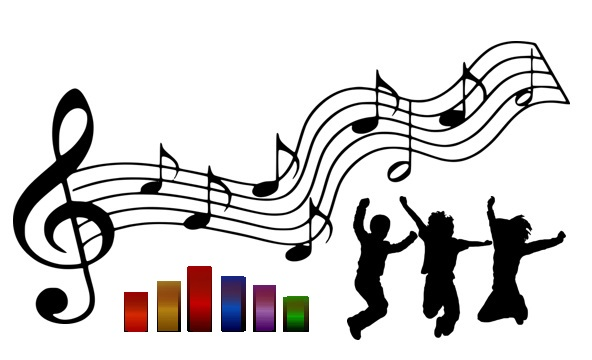

Creaciones con Prototipos.
En esta unidad utilizaremos la computadora y sus dispositivos de entrada y salida, para producir y modificar archivos de audio, así como la resolución de problemas para la programación.
En esta unidad utilizaremos la computadora y sus dispositivos de entrada y salida, para producir y modificar archivos de audio, así como la resolución de problemas para la programación.
Música y Baile
Una aventura de
programación
integrando música,
sonido y mezclas de
audio.